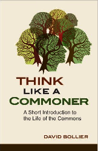
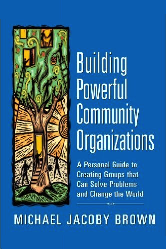

Commonization
I just finished a pair of books that were each very good in their own right, but were even better back to back:
|  |
Think Like a Commoner is a brief introduction to the notion of a commons: something managed jointly by a community according to rules they themselves have evolved and adopted. As Bollier repeatedly emphasizes, all three parts of that equation are essential: a commons isn't just a thing, like a shared pasture, but is necessarily also comprised of a community who share it and the rules they use to do so. |
|  |
Building Powerful Community Organizations is longer and much more practical. (I'm pretty sure I read it when it first came out, but didn't know enough then to understand just how insightful and useful it is.) Its author has spent thirty years helping people figure out what they want and how to get it. He clearly has a better world than ours in mind, but in this book at least, his goal is to help people get what's rightfully theirs inside the existing system, rather than replacing the whole system with something better. |
And that, I think, is why they ought to be read together. Most resources, throughout most of human history, have been commons: it is only in the last few hundred years that impersonal markets have pushed them to the margins. In order to do so, free-market advocates have had to convince us we're something we're not (dispassionate calculators of individual advantage) and erase or devalue local knowledge and custom. Both have had tragic consequences for us individually and communally, and now for our whole planet. BPCO is, I think, a toolbox for re-creating the commons in specific places for specific purposes.
I was asked on Wednesday what I would do if I had enough money to support me for a year. Because of the context, I spoke mostly about technical projects, but after a bit more thought, I think it's time I set my sights higher. I think it's time we all did, and these two books are guides to what we could be building and how we might get there.